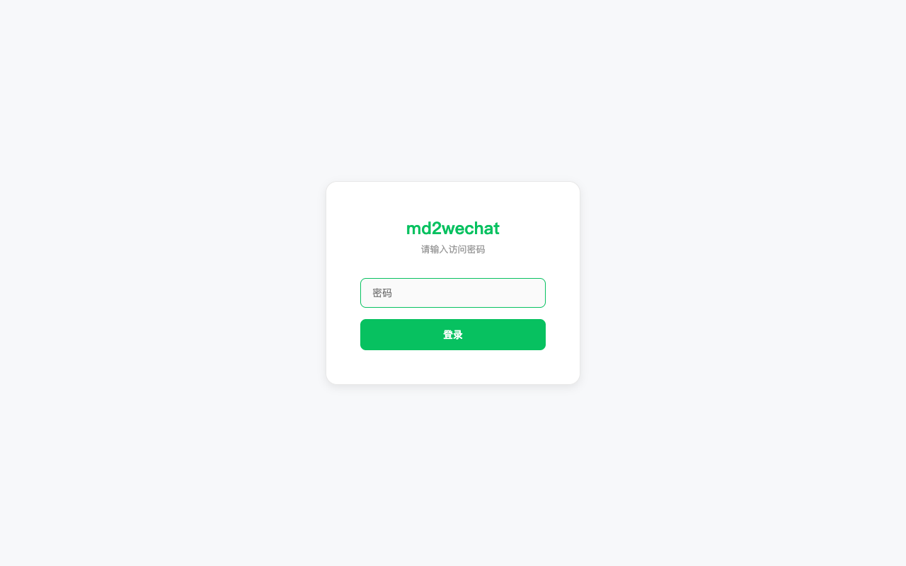
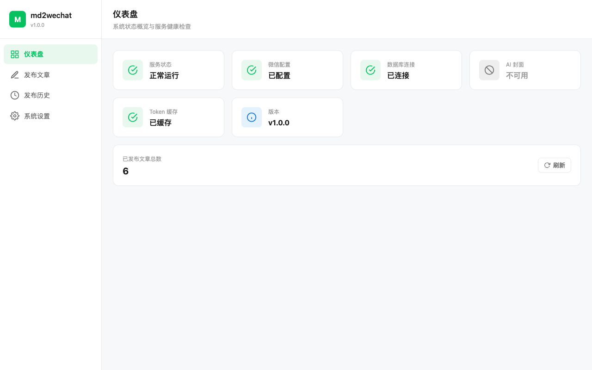
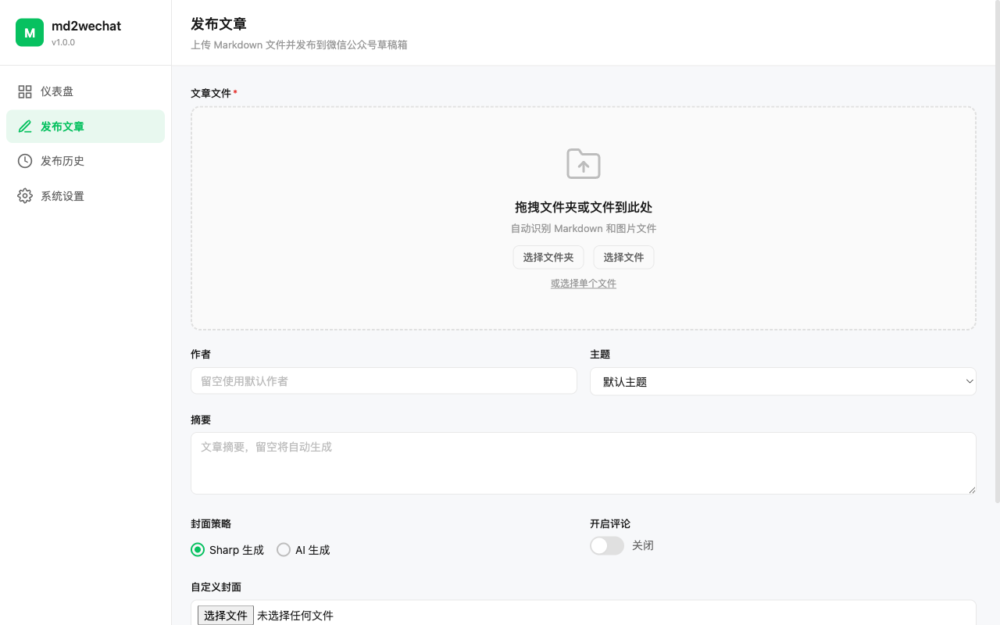
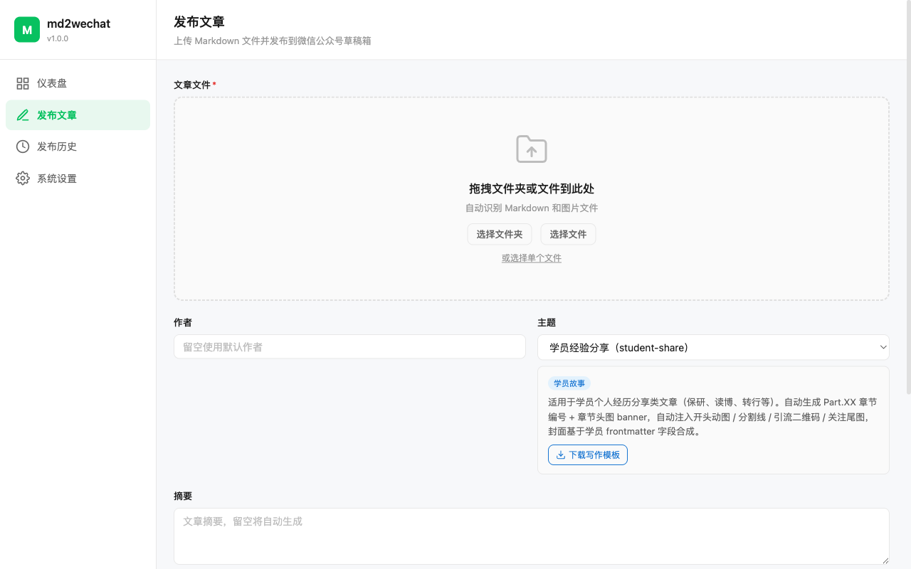
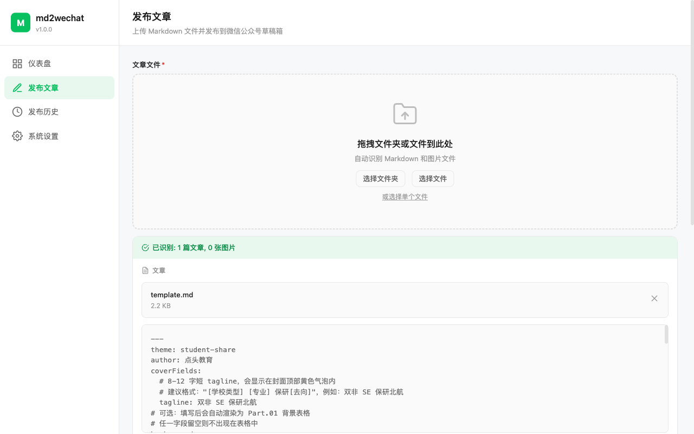
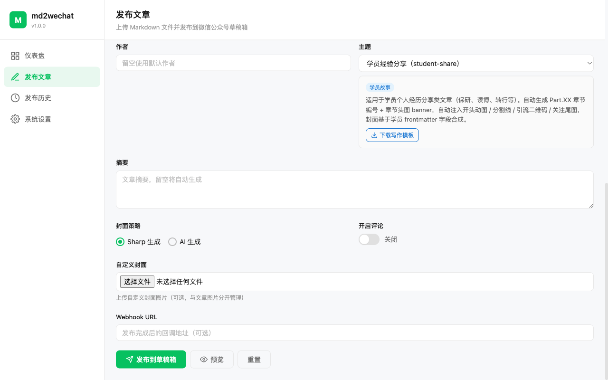
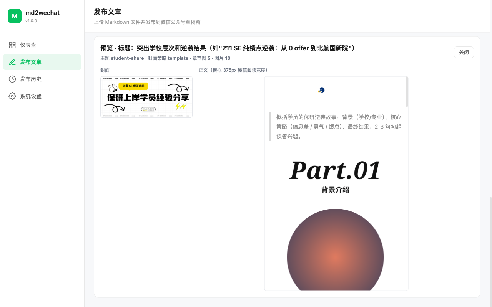
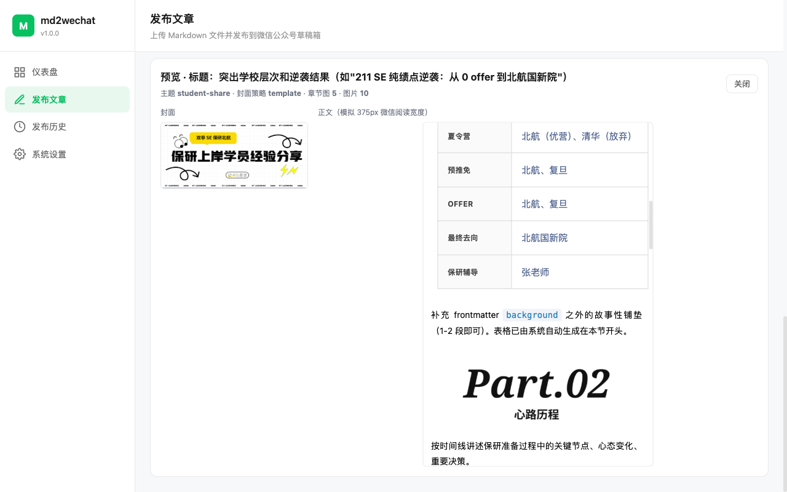
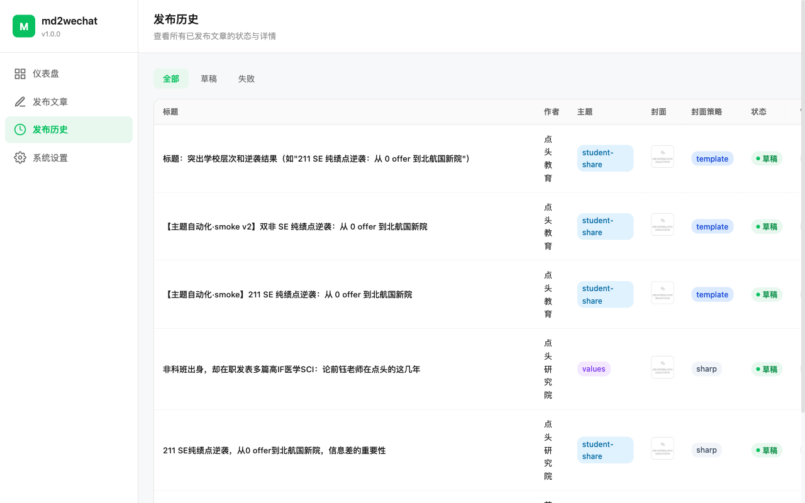

md2wechat 是一个把 Markdown 文件一键发布到微信公众号草稿箱的网页工具。它最核心的事情是替你做好三件事：
打开浏览器访问 http://43.139.146.170:3000，输入访问密码（向管理员索取）。

登录后进入仪表盘，可以看到服务状态、微信配置、数据库连接的健康度。

点左侧导航「发布文章」，在"主题"下拉框里选择你要写的文章分类。

选完主题后，会出现一张介绍卡片和「下载写作模板」按钮。请务必先下载模板——里面预置了 frontmatter 字段和章节骨架，照着填就行。

模板文件是一个 .md 纯文本文件，用任何文本编辑器打开即可（推荐 VS Code、Typora、iA Writer）。文件顶部两条 --- 之间的部分叫 frontmatter，是你要填的"结构化字段"：
---
theme: student-share
author: 点头教育
coverFields:
tagline: 双非 SE 保研北航
background:
school: 某 211 · 软件工程
rank: 8 / 120
english: 六级 560
research: 无
awards: 国家级 1 / 省级 2
summerCamps: 北航（优营）、清华（放弃）
prePromotion: 北航、复旦
offers: 北航、复旦
final: 北航国新院
mentor: 张老师
---
# 文章标题
## 背景介绍
（这里不用手写学校/专业/排名——background 字段会自动渲染成表格）
## 心路历程
按时间线讲述 ...
: 后面要留一个空格在发布页把整个 .md 文件拖到虚线框里（或点「选择文件」）。系统会识别并在下方展示内容预览。

页面底部有两个按钮：发布到草稿箱 和 预览。建议每次先点"预览"——它只在浏览器里渲染，不会占用公众号的草稿箱名额。

预览会在下方弹出一个面板，左边是封面，右边是 375px 宽的微信阅读宽度模拟正文：

向下滚动能看到 background 字段自动生成的表格：

预览确认无误后，点 发布到草稿箱。等待约 5-15 秒（生成封面、上传图片、调微信 API）后，页面会提示"发布成功"并展示草稿的基本信息。
然后打开微信公众号后台 → 草稿箱，就能看到刚才发布的这篇。检查无误后点微信后台的"发送"正式推送。
左侧「发布历史」页可以看到所有发过的文章：

template = 用了主题模板封面，sharp = 系统生成的默认封面，custom = 你手动上传的封面适用于前沿论文解读文章，自动生成 Part.01/Part.02 章节编号。
frontmatter 示例：
---
theme: paperweekly
title: 论文标题
author: 点头研究院
---字段最少，只需 title + author。
适用于保研、读博、转行等个人经历类文章。自动合成模板封面 + 章节头图 + Part.01 圆形头像 + 背景信息表格 + 真题卡片。
frontmatter 示例：
---
theme: student-share
author: 点头教育
coverFields:
tagline: 双非 SE 保研北航 # 封面顶部黄色气泡文字，8-12 字
background: # 自动生成 Part.01 背景表格（可选）
school: 某 211 · 软件工程
rank: 8 / 120
english: 六级 560
research: 无
awards: 国家级 1 / 省级 2
summerCamps: 北航（优营）、清华（放弃）
prePromotion: 北航、复旦
offers: 北航、复旦
final: 北航国新院
mentor: 张老师
---真题卡片自动识别：正文里写 > **XXX 大学** 开头的块引用，会自动套上浅灰底卡片样式。例如：
> **北京航空航天大学**
>
> 1. **考核时长：** 30 分钟
> 2. **考核方式：** 线上
> 3. **考核过程：** PPT 自我介绍 + 专业问题
> 4. **真题回忆：** ……适用于人物专访 / 价值观叙事类文章。自动注入开头动图卡片 + 结尾固定钩子段落，章节用"第一部分 / 第二部分"中文编号。
frontmatter 示例：
---
theme: values
title: 人物专访
author: 点头研究院
---tagline 字数限制？建议 8-12 字。超过 12 字会被自动换行或挤压，影响美观。格式建议：[学校类型] [专业] 保研[去向]。
两种方式：
，系统会自动下载并上传到微信素材库.md 和图片放一起，系统自动识别检查两点：① 图片链接是否有防盗链；② 图片大小是否超过 10MB。如果图片上传失败，发布流程会继续完成，但失败的图片会被移除。在"发布历史"里可以看到错误信息。
本工具发送的是草稿，微信后台的草稿箱里随时可以删除或重建。只要你没点微信后台的"发送"按钮，都不会推给粉丝。
可以，但需要开发同学介入。主题文件在服务器的 themes/ 目录。写作者只需要按 frontmatter 模板填内容即可。
会在公众号后台生成两条独立的草稿（不会合并）。发布历史里也会有两条记录。多余的草稿可以在微信后台删除。